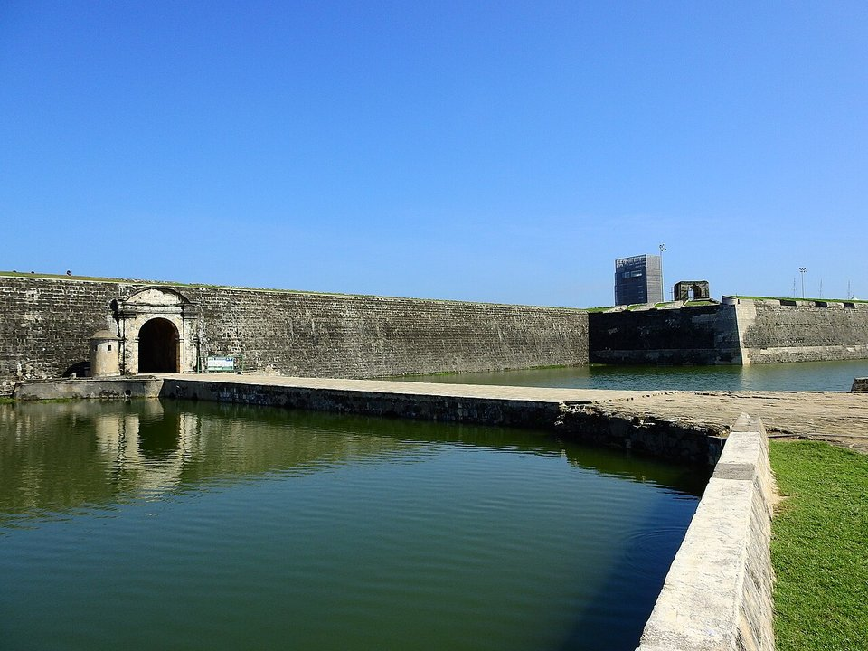
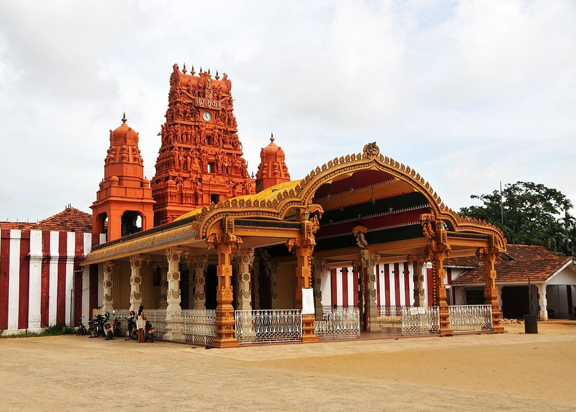
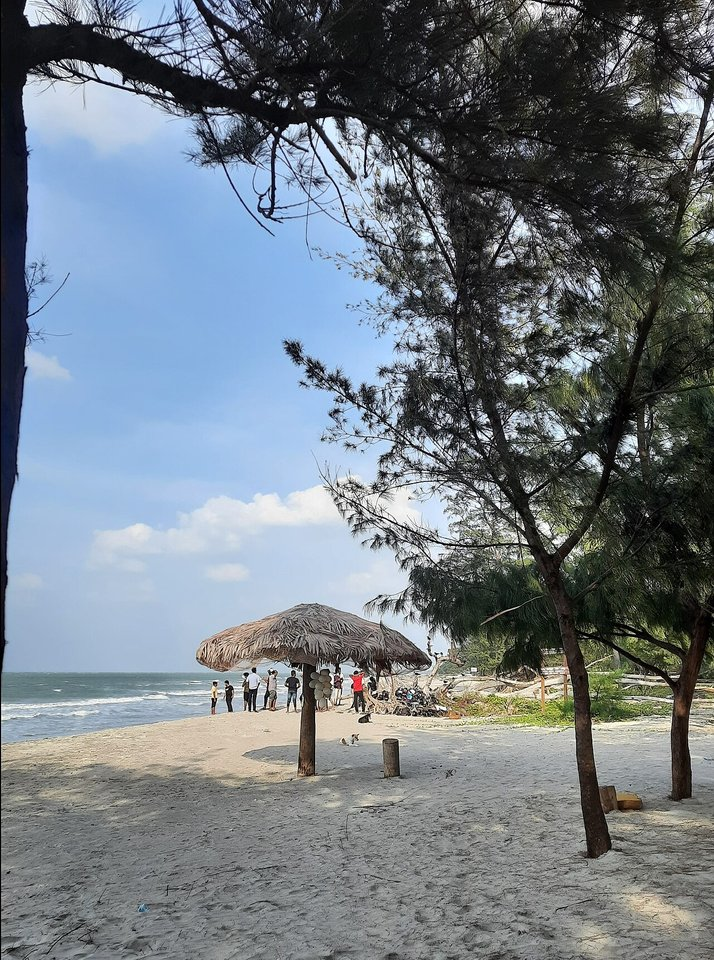
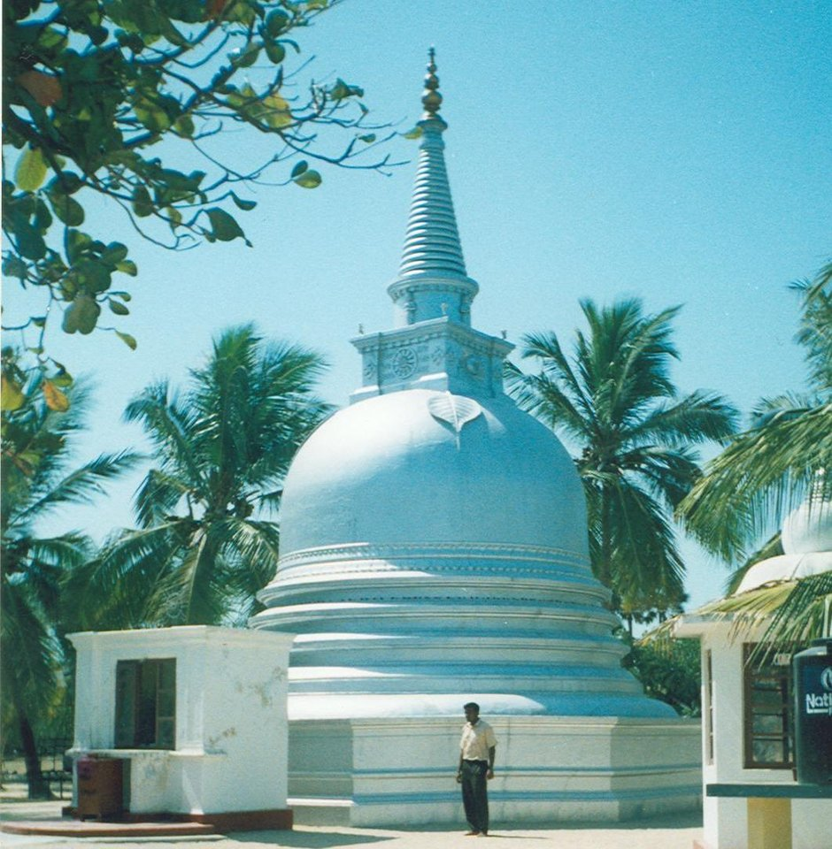
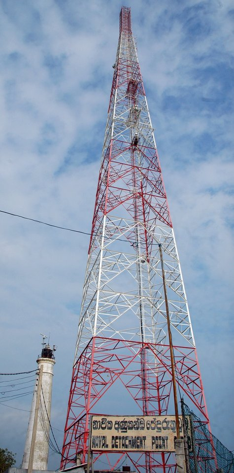
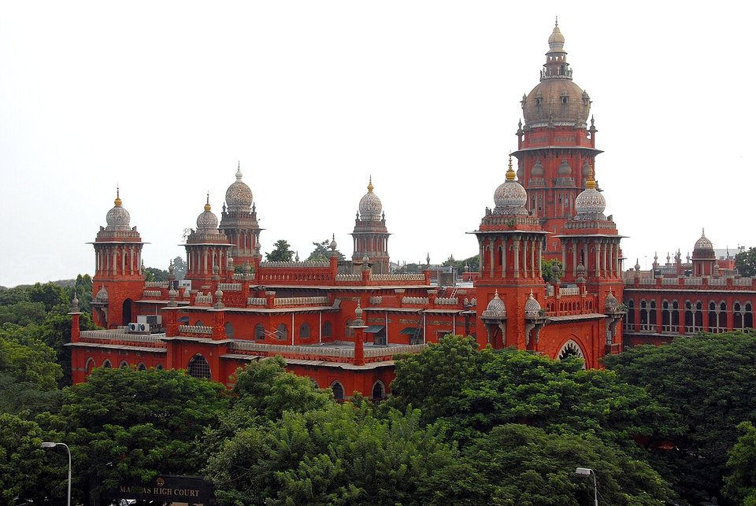
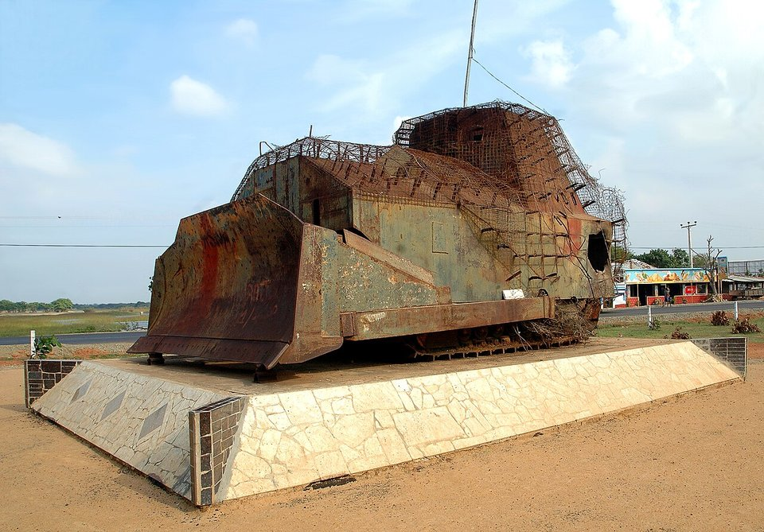
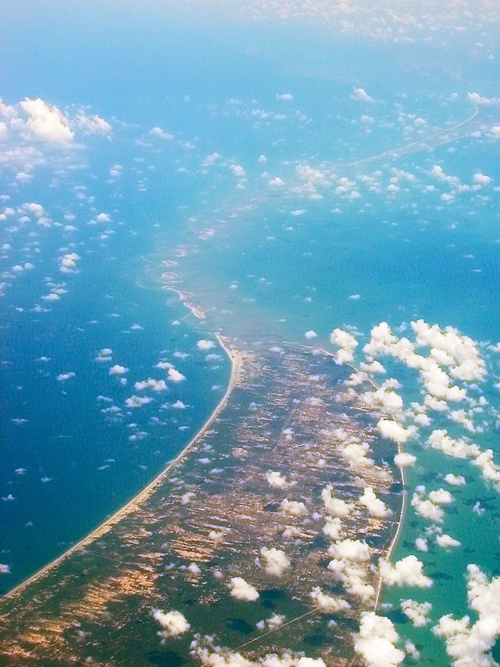
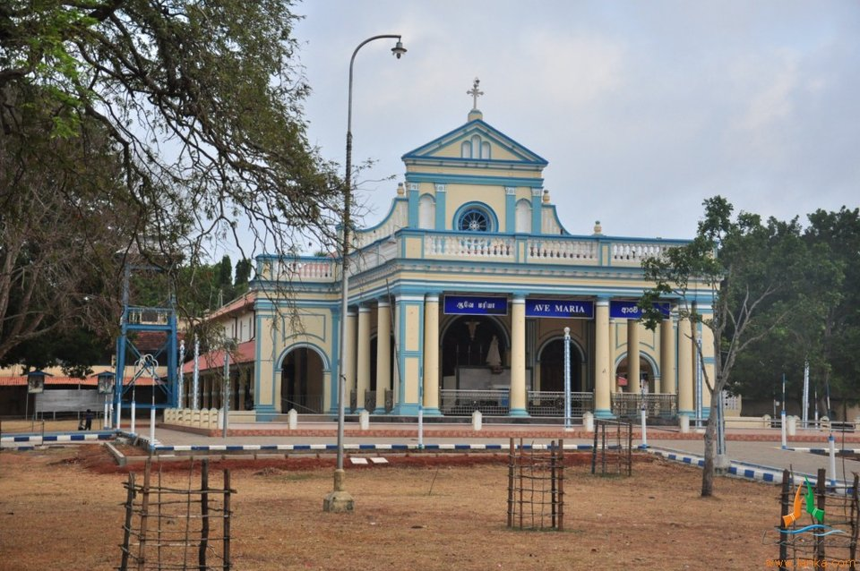

Top Destinations in Northern Province
Discover the signature highlights and attractions across this province.

Historical SitesJaffna Dutch Fort & Coastal Lagoon
One of the most expansive and intact Dutch colonial fortifications in Asia, built in 1680 with massive coral-stone pentagonal ramparts overlooking Jaffna lagoon.

Temples & Religious SitesNallur Kandaswamy Kovil
The supreme spiritual sanctuary of Sri Lankan Tamil Hinduism, famed for its towering golden gopurams, brass oil lamps, and the vibrant 25-day Nallur Festival.

Beaches & CoastlinesCasuarina Beach (Karainagar Island)
The most famous beach in the north, celebrated for fine white sands, shallow turquoise waters where you can walk hundreds of meters out, and whispering casuarina trees.

Temples & Religious SitesNagadeepa Purana Viharaya & Nainativu Island
One of the Solosmasthana (16 most sacred Buddhist sites) visited by Gautama Buddha, coexisting on Nainativu Island with the vibrant Hindu Nagapooshani Amman Temple.

Viewpoints & PanoramasPoint Pedro & Sakkotai Cape
The northernmost geographic point of Sri Lanka, marked by the Sakkotai Cape concrete marker, a historic 32-meter lighthouse, and sand dunes.

Historical SitesJaffna Public Library
A magnificent Indo-Saracenic cultural landmark and symbol of northern intellectual heritage, rebuilt to its glorious architectural splendor.

Historical SitesElephant Pass Causeway & War Memorial
The historic narrow isthmus gateway linking the Jaffna peninsula to mainland Sri Lanka, featuring historical memorials and vast salt pans.
 Islands & Archipelagos
Islands & Archipelagos
Mannar Island & Talaimannar Pier Lighthouse
The westernmost maritime outpost of Sri Lanka, featuring the historic 1915 Talaimannar Pier, round white lighthouse, and sweeping turquoise beaches.

Islands & ArchipelagosAdam's Bridge (Rama Setu) Marine Viewpoints
The legendary chain of 18 limestone shoals and sand islands stretching 48 kilometers across the Palk Strait from Sri Lanka toward India, steeped in Ramayana mythology.

Temples & Religious SitesShrine of Our Lady of Madhu
Sri Lanka's holiest Roman Catholic pilgrimage shrine, nestled deep in the tropical dry-zone forest, visited by pilgrims of all faiths for over 400 years.